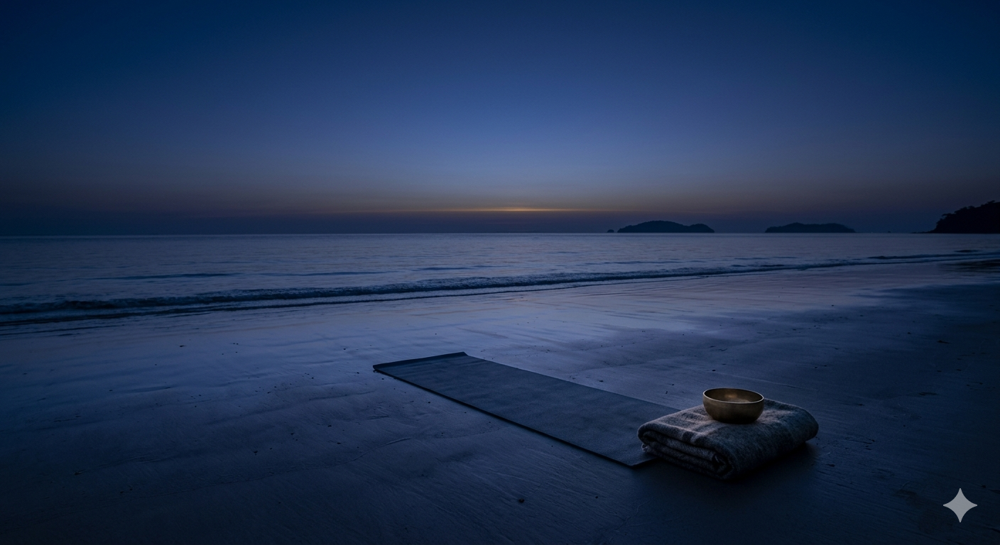
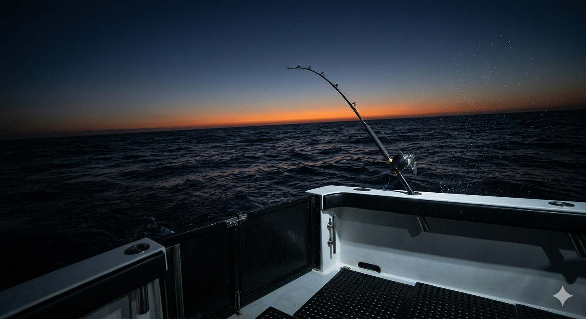

After Dark Adventures
The night reveals a world most resorts never show you. At Merlune, darkness is an invitation.

Private Coral Dive
Descend into the Andaman's living coral cathedrals with a private dive guide. Vast reef walls, sea turtles, reef sharks, and bioluminescent coral edges — an underwater world so rich it defies the imagination. Available for all experience levels, from first-time snorkellers to advanced divers.
Book This ExperienceBioluminescent Kayak
Paddle through a lagoon that glows with every stroke. Blue-green bioluminescent plankton light up the darkness around you like liquid starlight. Stars reflected in the undisturbed water ahead. Silence, except for the drip of your paddle. This is Merlune at its most magical.
Book This Experience

Stargazing Observatory
Our resident astronomer guides you through constellations invisible in city skies. Using a professional-grade brass telescope and the Andaman's near-zero light pollution, you'll see the Milky Way, nebulae, planets, and satellites with extraordinary clarity.
Reserve Your SpotPrivate Island Dhow Sail
Board a traditional wooden dhow as the sun sets and the sky deepens from gold to navy. Sail through the archipelago under the stars with champagne, a private crew, and the sound of the wind in the canvas. Arrive at a deserted island beach for a bonfire supper.
Book This Experience

Dawn Shore Yoga
As the sky shifts from deep navy to the first gold thread of sunrise, move through a guided yoga flow on the shore. Feet on wet sand, the ocean's rhythm as your metronome, a brass singing bowl marking the transitions.
Join the SessionSea Turtle Conservation
Witness olive ridley hatchlings make their first moonlit journey to the sea. In partnership with local marine biologists, Merlune protects nesting beaches during season. Guests are invited to observe (and sometimes assist) hatchling releases.
Enquire About This Season

Andaman Rainforest Trek
Enter the ancient Andaman rainforest at first light — when mist hangs between the trees and rare Hill Myna birds begin their calls. A naturalist guide leads you through buttress roots, mangrove edges, and medicinal plant groves. A journey into deep green silence.
Book This ExperienceDeep Sea Fishing Charter
Depart at pre-dawn on a private fishing charter into the deep Andaman waters. The sky shifts from dark navy to orange as you wait for the first strike. Marlin, tuna, barracuda — the waters here are among the richest in the Indian Ocean. Your catch can be prepared by our chefs that evening.
Book This Experience
Design Your Own Night
Can't find exactly what you seek? Our experience curators will design a bespoke adventure tailored to your desires — from private island picnics to underwater proposals.